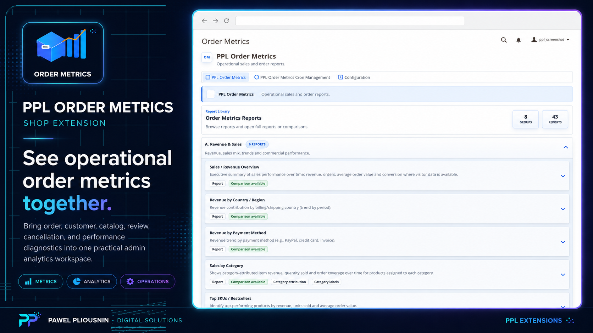
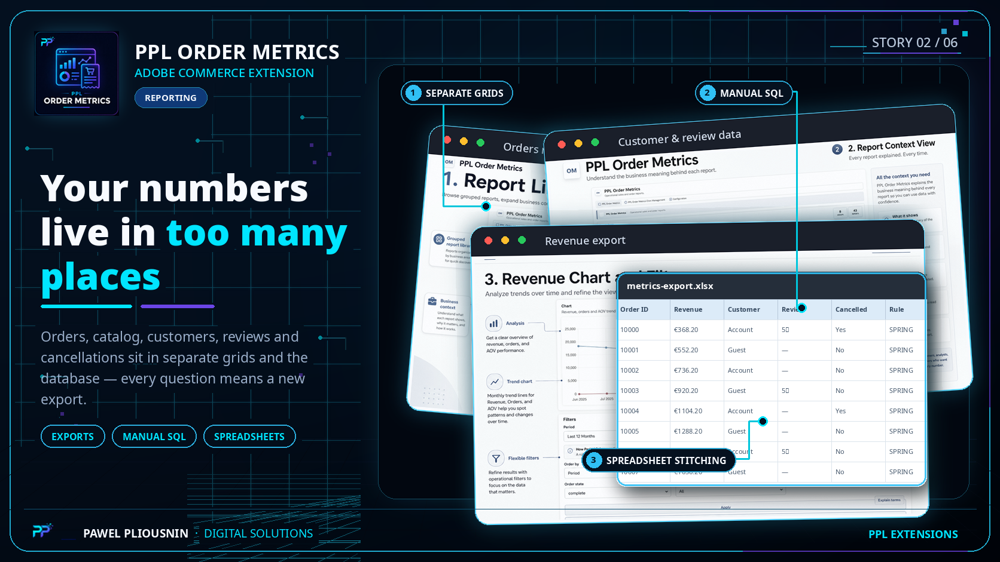
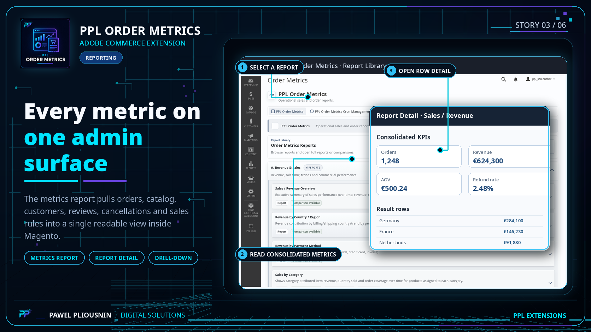
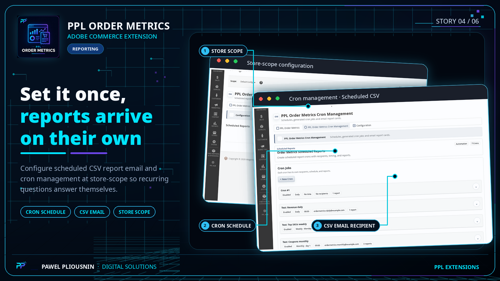

Metrics report
Review broad store metrics across order, catalog, customer, review, cancellation, sales-rule and performance areas.
PPL Order Metrics brings order, catalog, customer, review, cancellation, sales-rule and performance diagnostics into a dedicated Magento admin surface with scheduled CSV email and cron management. It stands alone because it answers broader operational analytics questions than the focused PPL Report modules.

Magento stores contain the data, but not one consolidated operational view across orders, catalog, customers, reviews, cancellations and promotions. Order Metrics reduces the repetitive work of exporting grids, stitching spreadsheets together or writing one-off SQL every time someone asks the same question again.
Order Metrics is positioned as a standalone product because it combines multiple operational dimensions in one analytics workspace.
Review broad store metrics across order, catalog, customer, review, cancellation, sales-rule and performance areas.
Move from summary to context when a figure needs deeper operational review.
Send recurring reports automatically instead of asking someone to export the same file again.
Manage and monitor scheduled report delivery inside the Magento admin workflow.
Use runtime checks to understand whether reporting tasks are running as expected.
Can be used alongside PPL Reports and Action Widget while remaining its own analytics product.

Open a report, review context and move from headline metrics into detail.

Adjust dates and report parameters inside the admin instead of reworking spreadsheets.

Use summary values and tables as a regular operational check.